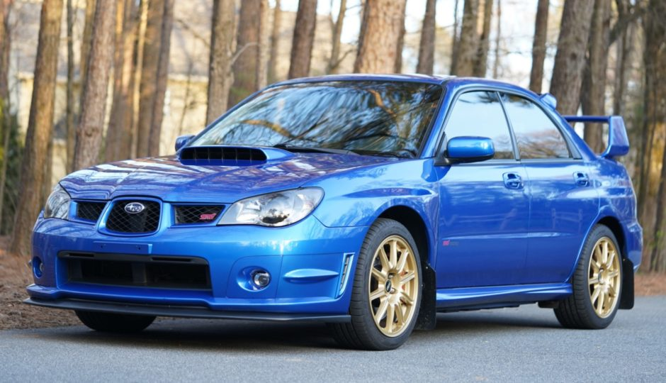

I WANNA BE SEDATED, FRAJERKY A CESTA INDIVÍDUA
Kreppius | Článok
V dnešnej modernej dobe je mnoho vecí ktoré vás môžu rozptýliť od vášho cieľa. Určite každý nejaký má. Sen, vášen, vysnívané auto (moje je Subaru Impreza WRX STi) alebo niečo čo by sme chceli dosiahnuť. Naši autori na tejto stránke každý prispeli svojím tokom myšlienok o tom že načo sa sústrediť alebo čomu sa vyhýbať. Ale ako správna banda necháva mne úlohu rozprávať o dosť dôležitej téme: vzťahoch.
Predtým ako začnete krútiť hlavami, nie som expert na vzťahy a nie som ani niekto kto by vás mal poučovať o tom čo robiť. Úloha Ježiša mne nepripadá a nebudem vás ako stádo viesť ku šťastnému ku životu. Jediné o čo sa budem snažiť je aby ste prehodnotili svoje hodnoty a možno sa troška zamysleli nad tým čo každý deň robíte. A druhá vec aj keď budem písať o ženách (asi ste si domysleli ktorá polovička som) tak aj pre naše dámy sa tu nájde zopár vecí ktoré sú hodné povšimnutia.
Zdá sa mi že v modernom svete je nemať vzťah niečo neprijateľné. Je to skoro pre niektorých tak dôležité ako mať prácu a spoločnosť tomu podľa mňa pripisuje aj takú hodnotu. Keď sa ma mama po tretí krát spýtala že kedy dovediem domov nejakú dámu a ja som jej povedal že niet času ani chute tak mi pri rodinnej večere dosť hlasno oznámila že ona ma akceptuje a ak sa mi páčia chalani tak s tým nemá žiaden problém len jej to musím povedať. Skoro som sa zadrhol vývarom keď som to počul. Nie žeby som mal niečo proti gayom ale myšlienka že ak hneď nemáte frajerku ste považovaný za gaya alebo čudáka mi prišla smiešna. Ale o tom po tom.
Akonáhle som vykašľal zo seba slíže a kuracie mäso som si začal uvedomovať že akú hodnotu pripisuje spoločnosť a ľudia naokolo tomu že či máte alebo nemáte vzťah. Pamätám si na deň (ešte pred touto večerov) keď som chalanom v jedálny po vypočúvaním v štýle KGB konečne oznámil že mám frajerku. Zdvihol sa krik a potlesk ala druhá strana odpovedá a hneď začali otázky typu: ako sa volá?, je vysoká?, ukáž fotku?, máš jej insta?, napíš jej Matej že čaves atď. Svoje vzťahy som vždy držal ako súkromnú vec lebo som nechcel aby mi každý pchal nos do toho. Po dni keď asi každý chalan vo mojej triede doslova analyzoval každý digital footprint mojej dámy, tak som ďalší týždeň počúval narážky, srandu a určité rady do života. Ja som človek ktorý sa na tom zasmeje lebo fakt niektoré vtipy boli dosť dobré ale znova, je mať frajerku všetko na čom v živote záleží?
Keby som mal ženu a svadbu chápem. Ale ani náhodou to nebolo niečo dlhodobé ani som neplánoval že spolu s tou babou zomrieme spolu a myslím že ona tiež nie. Nie je to ani životné rozhodnutie ani niečo veľmi dôležité podľa mňa. Mať frajerku a mať sa navzájom radi je pekný pocit ale nie niečo okolo čoho sa točí celý svet a určite nie ten môj.
A tu prichádza moja hypotéza. V modernom svete by mala frajerka byť niečo ako doplnok do života nie niečo čo každý musí nutne mať. Muž ako taký by nemal myslieť na ženy a robiť všetko čo robí len pre niekoho. Motivácia musí prichádzať nie z toho že sa konečne nejaká baba so mnou vyspí ale z toho že ja ako indivíduum sa chcem zlepšiť v danej disciplíne lebo ma to baví.
V poslednom čase som začal počúvať punk. Už fakt nie je moc štýlov ktoré som nepočul a punk bol taký veľký že som si povedal že cez karanténu si naštudujem troška pesničiek a nejaké kapely. A nedá sa nezačať pri Ramones, kapela ktorej tričká ešte dodnes vidím na uliciach (pochybujem že ľudia ktorý ich nosia vedia o čo sa jedná). Keď poviete jemnému fajnšmekerovi hudby meno Ramones určité sa mu niečo vybaví. A tak som otvoril Spotify, spravil playlist, a začal hádzať pesničky. A pri pesničke I Wanna Be Sedated som sa aj troška započúval o čom sa spieva.
Pesnička samá o sebe je váš typický Ramones punk, gitarka, troška hlasnejší hlas, rytmické bubny atď, šak si myslím že po prečítaní si ju pustíte. Ale spevák v pesničke spieva o tom ako sa nudí a chce byť zdrogovaný akože lepšia alternatíva. A tu budem z ním nesúhlasiť.
Ženy sú drogy. A veľmi ťažké. A to z dvoch dôvodov. Poďme na ne.
Prvým je propagácia spoločnosťou. Ako som už spomenul, v dnešnej dobe sa zdá že vzťah je nutnosť a nie niečo čo si môžete zvoliť. Človek čím starší, tým sa od neho očakáva že o chvíľku si nájde niekoho komu bude rozumieť a vice verza, že sa nasťahujú ku sebe, možno aj decko aj dve a rodičia týchto hrdličiek každý deň roztržite otvárajú poštovú schránku v nádeji že tam nájdu pozvánku na najväčšiu žráčku peňaží, ehm pardón, svadbu. Každý to očakáva, každý to berie ako normu a už Huxley a Orwell vedeli čo sa robí s ľuďmi ktorý nie sú v norme.
A to isté sa v dnešnej dobe deje aj keď to nerobí vláda ale ľudia okolo nás. Každý sa bojí určitého vyčlenenia z našej komunity alebo s nejakého spoločenského kruhu a právom. Spoločenské kruhy sú potrebné na to aby jedinec prežil: často len trávenie času v správnom kruhu je oveľa lepšie ako čítanie alebo byť sám. Ale určité kruhy majú určité pravidlá alebo niečo podľa čoho sa orientujú a keď člen tohto kruhu ich odmieta, často sa kruh zhodne na tom že odmieta práve ich. Keď máte v autobuse nosiť rúško a prídete tam bez neho, tak porušujete pravidlá danej komunity (ľudí ktorý v tom autobuse sedia) a tým pádom má daná komunita plné právo vás vylúčiť (nemôžete sa v tom autobuse voziť, čiže asi len peši bus vám ostáva). Ale keď celková spoločnosť sa zhodne, nemusí ani priamo, že každý musí mať vzťah a vy sa tomu aktívne vyhýbate, môže sa veľmi ľahko stať že vás môže vylúčiť. To príjemné nie je.
Druhým je strach z individualizmu a manifestácie jeho tieňa. Širšia spoločnosť sa bojí vlka samotára a práve tým že niekoho pri sebe máte, ste viac predpovedateľný. Spoločnosť vie že určité pravidlá budete dodržovať a tým pádom sa vie orientovať a je ochotná vám veriť. Je to to isté ako keď do banky prídete po úrok a nemáte zamestnanie. Banka vám neverí že to viete splatiť a tak vám ho nedá. Keď si zamestnanie nájdete tak banka vám verí viac a tým pádom je možné že si ten úrok viete aj reálne zobrať. Banka očakáva že práve tým že máte stabilné zamestnanie budete mať lóve na konci mesiaca ktoré im pekne pošlete.
Keď toto prehodíme na úroveň vzťahov tak vidíme prečo sa širšia spoločnosť vás tak bojí. Tým že každý vzťah má, tak tým pádom automaticky ten kto ho nemá je považovaný za niekoho kto musí byť iný a tým pádom aj nebezpečný. A práve preto je pre nich tak dôležité aby ste nejaký mali.
Realitná šou Mama ožen ma, bola len vrcholom toho celého. Slovensko ako také sa pri spoločnosti lacného vína a predražených čipsov stretlo pred televíznymi obrazovkami aby sa pozeralo a zabávalo na „úbožiakov“ ktorý vzťah nemajú. Ale podľa ich kritérií aj ja som ten istý úbožiak a poviem vám že som na to pyšný.
Nehanbím sa za to že nechcem vzťah. Lebo v tom nevidím, aspoň osobne, nijakú pointu. Niektorý ktorý majú pri sebe svoje nežnejšie polovičky, možno povedia že počkaj sa na tú pravú alebo neomietaj hneď všetko a ja vás chápem. Je od vás veľmi milé a cením si že chcete aby som bol šťastný a emočne vyvinutý ale ja to nechcem. Ja ako indivíduum, ako jeden človek, som si zvolil voľbu že nechcem ani teraz ani do budúcna ženu ani frajerku ani frajera. Nie preto žeby som mal nejakú nenávisť voči ľudom, ja ľudí mám veľmi rád, až moc ale preto lebo pre mňa to je míňanie drahocenného času ktorého ja nemám na rozdávanie. Ja chcem v živote dosiahnuť veľké ciele a žiadna žena (možno nejaká ktorá by mi v tom dopomohla) mi momentálne nepríde ako vhodná na to aby som sa jej venoval. Znie to sebecky ale povedal som si že si nebudem dávať servítku pred ústa, tak čo už.
Ešte raz, mám ľudský kontakt (často má nájdete spoločensky unaveného v nejakej diere) ale niekde si musím nastaviť svoje hranice. Žena, ako taká, je ľudská bytosť a keď je ako zodpovedný človek oznámim že chcem byť s ňou vo vzťahu podpisujem zmluvu že sa jej budem plno venovať a budem tu pre ňu keď ma ona bude potrebovať a to je niečo čo ja nie som ochotný robiť. Lebo po prvé, by som márnil čas tej dámy (a asi jej aj emočne ublížil) a po druhé viem že nechcem si plniť moju časť zmluvy.
Každý deň na sebe pracujem. A to nie je len prázdne heslo, ja to aj fakt robím. Robím čo môžem aby som každým dňom bol lepšia verzia predošlého ja a robím to iba z čistého egoistického záujmu. Také veci ako pomoc ľudstvu a nejaké niečo iné sú iba vedľajšími motivátormi toho čo naozaj chcem.
Dobré sa mi číta po mne, dobre sa mi pozerá na veci ktoré som sám dosiahol. Drží ma to od toho aby som si raz podrezal tepny. Lebo ako vzťahy sú bezvýznamné pre mňa, taktiež život je bez aktivít ktoré robím. Nebudem za gadža a tváriť sa že všetko robím pre vás a pre niekoho, lebo to by odo mňa bolo netaktné a hlavne by som klamal. Som samoľúbny egoista a som na to hrdý lebo viem že niekde v kútiku duše každý je. Každý chce pre seba to najlepšie a manifestácie tohto pudu je vidieť každý deň v každom kroku ktorý robíte. Ale čo už.
Rád by som sa na to proste vysral. Rád by som si len našiel dámu, ktorej sa oddám, moju Kleopatru, ale nedokážem to. Lebo mi furt v hlave hrá hlas že mrhám svojím časom. A pravda vás oslobodí ale predovšetkým naštve.
Moje aktivity sú tiež márnenie času. Všetko je. Ale je to môj čas ktorý márnim. A vy by ste sa tiež mali zamyslieť či vy nemárnite čas len preto že vám to povedala spoločnosť. Aj vy by ste mali prehodnotiť hodnotu vzťahu, či to robíte len preto aby ste sa mohli vychvaľovať že frajerku máte a aby ste raz za čas mohli mať sex alebo to robíte lebo vy ako jedinec ste sa rozhodli obetovať svoj život pre nejakú dámu ktorú chcete potešiť.
A potom tú začína nová kapitola, ktorú veľmi rád otvorím (lebo už som si otvoril červené) a to je to či ste ochotný riskovať všetko kvôli jednej osobe. Je to ťah ktorým sa veľmi rýchlo viete zničiť ak budete mať zlé karty, je to risk. Bohužiaľ. Každý vzťah je risk a len kvôli tomu že niekto si niečo bude myslieť či ste to ochotný podstúpiť. Keby vám náhodný človek na ulici povedať kde investovať, hrnuli by ste sa tam? Len za to že máte pekné emócie s danou ženou, neznamená že také budú navždy. A prajem všetkým vzťahom ktoré sú a ktoré existujú aby vám to vydržalo cez dobré aj zlé aby ste sa mali radi a aby ste boli vždy len pre seba a pri sebe. Ale vy musíte zároveň rešpektovať že ja na túto jazdu sa nechcem dať radšej vás počkám dole. Každý sa prediera životom ináč a ja sa predieram takto a je to moja cesta a keď sa skončí tragicky tak čo už, aspoň sa môžete poučiť.
Neviem čo má všetko na tejto ceste čaká. Často keď zaspávam, trpím lebo si predstavím že niektorý moji rovesníci zaspávajú v hrejivom objatí ich vyvolenej zatiaľ čo aj iba zo slzou v očiach. Ale ja trpím a viem o tom a vybral som si toto utrpenie lebo si myslím že dlhodobo to bude mať význam. Tiež riskujem a asi až v budúcnosti uvidím či sa mi to hodí.
A ešte aby ste si nemysleli že si myslím že nikto nie je mňa hodný preto lebo mám o sebe veľkú mienku. O to tu vôbec nejde. Mám dosť sebareflexie aby som vedel že nie som žiadny Casanova a len mávnutím prstom by ku mne letelo stádo žien. Ani náhodou.
Je smutné že musím vysvetľovať svoje rozhodnutie, ktoré sa mne nezdá až tak radikálne. Nikomu neubližujem, nikoho netrápim. Ale ľudia si myslia že vedia čo je pre mňa dobré len preto lebo pre nich to je. Ja som za opačný názor. Nikoho nesúdim, nikto ma nezaujíma, je mi to ukradnuté. Tak mi dajte ten istý priestor.
Je podstatné aby každý prehodnotil svoj vzťah. Čo prináša vám a čo dávate vy doň? Je to cieľ hodný? Je to niečo čo chcete robiť dlhodobo? Je to niečo alebo niekto pre koho chcete trpieť? Viete to sto pro? Lebo ak ste si neistý tak sa nenechajte ovládať spoločnosťou a tým čo niekto povedal. A hlavne nie emóciami.
A kde do toho prichádza pesnička od Ramones? Už ste aj zabudli čo? Neva, pripomeniem vám ju rád.
Twenty-twenty-twenty four hours to go
I wanna be sedated
Nothing to do nowhere to go-o-oh
I wanna be sedated
Preklad:
Dvadsať-dvadsať-dvadsaťštyrí hodín ešte
Chcem byť na sedatívach
Nič na robote, nikam sa nechýstá á ám
Chcem byť na sedatívach
A ja nechcem byť na sedatívach lásky lebo ja mám toho ešte veľa na robote. Ja nechcem byť na sedatívach a len preletieť životom a počúvať to čo každý vraví, chcem si vybojovať svoje miesto sám. A na to potrebujem čas, kľud a samého seba. A to sa bohužiaľ nedá keď máte plnohodnotný vzťah a chcete aby fungoval. A ja len dúfam že sa niekedy odveziem niekam veľmi ďaleko na mojom Subaru. Triezvy. Chcem tak veľa?
PS: Marína sľubujem jednu grátis jazdu na Subaru ak bude pesnička.
16. augusta 2020